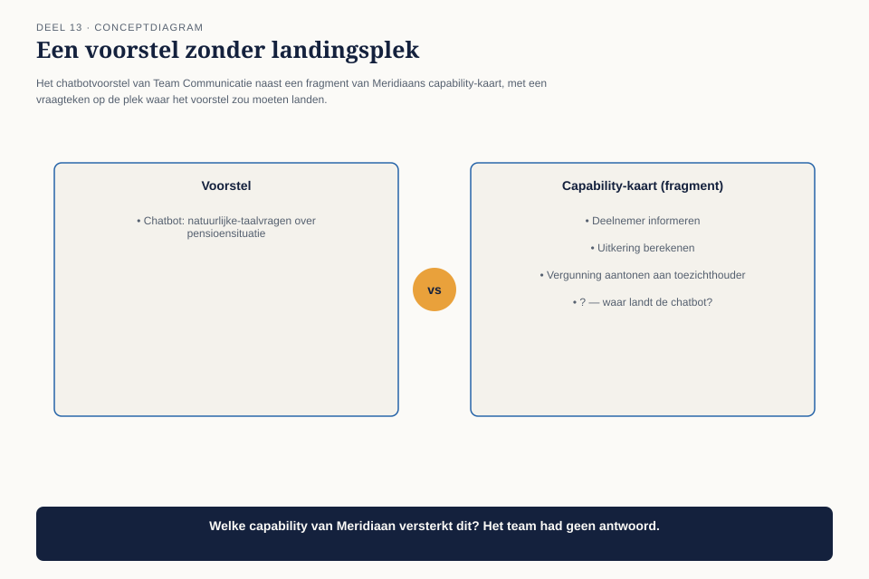
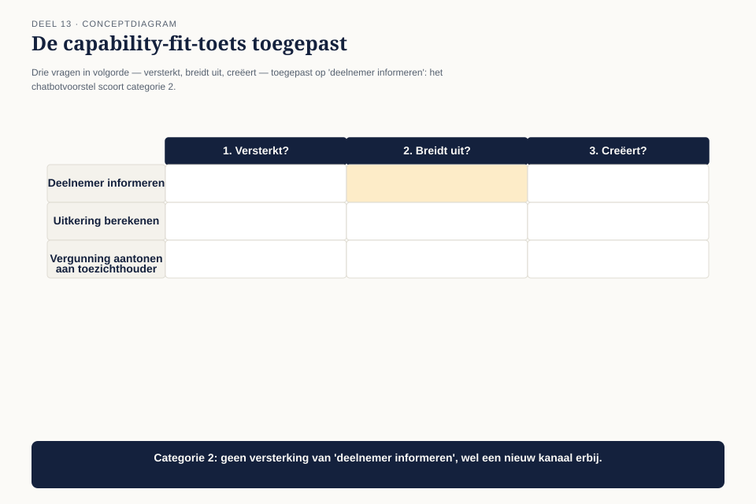
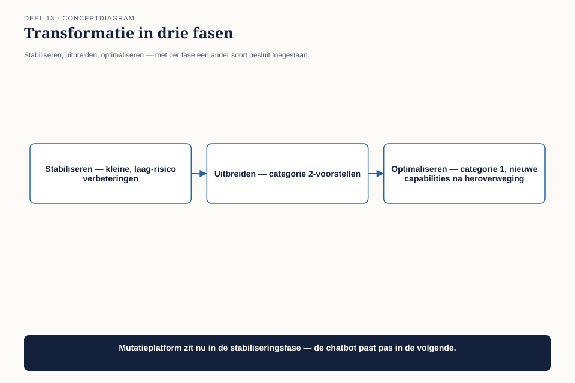

Cursus BTABoK · Niveau 2 (CITA-A) · Deel 13 van 30
Digital Business
Digital Business bevat vijf onderdelen: strategie, wendbaarheid, businessmodellen, business capabilities, en transformatie. Dit deel behandelt ze rond één terugkerende vraag in elk programma: wanneer is een goed idee ook een goed idee om nú te bouwen? Aan het eind van dit deel kun je:
7secties
±2udagdeel + huiswerk
4controlevragen
4figuren
Positionering. Deze cursus bereidt je voor op de Iasa-certificeringen en is uitdrukkelijk géén vervanging van het officiële examen- en cursusmateriaal van Iasa.
Niveau 2: ❶ Het engagement model → ❷ Digital Customer → ❸ Digital Business (hier) → ❹ Digital Employee en Digital Operations → ❺ Value model I → ❻ Value model II → ❼ Operating model I → ❽ Operating model II → ❾ Governance en roadmap → ❿ Architectuurvolwassenheid → (11) Specialisatiekeuze → (12) Examentraining CITA-A en portfoliobeoordeling
01
Waar dit deel over gaat
⏱ 8 min
Digital Business bevat vijf onderdelen: strategie, wendbaarheid, businessmodellen, business capabilities, en transformatie. Dit deel behandelt ze rond één terugkerende vraag in elk programma: wanneer is een goed idee ook een goed idee om nú te bouwen?
Aan het eind van dit deel kun je:
een capability-kaart lezen en gebruiken om te bepalen of een voorstel bestaande capaciteiten versterkt, uitbreidt, of er helemaal buiten valt;
het verschil toepassen tussen strategische wendbaarheid en ongeplande koerswijziging;
een transformatie in fasen opdelen in plaats van als big bang te behandelen.
02
Het idee van Team Communicatie
⏱ 8 min
Team Communicatie — hetzelfde team uit deel 12 — komt met een enthousiast voorstel: een chatbot die deelnemers in natuurlijke taal vragen laat stellen over hun pensioensituatie. Het idee is goed uitgewerkt, technisch haalbaar, en het team wil er de volgende sprint mee beginnen.
Claudette stelt één vraag voordat ze verder gaat: “Welke capability van Meridiaan versterkt dit?” Het team heeft geen antwoord. Het idee ontstond niet uit een bedrijfsbehoefte maar uit enthousiasme over een technologie die het team interessant vindt — dezelfde valkuil als “iets met AI doen” uit deel 6 (niveau 1), nu op programmaniveau.

Figuur 13-1 — het voorstel van Team Communicatie naast de capability-kaart van Meridiaan, met een vraagteken op de plek waar het voorstel zou moeten landen
Dit is geen afwijzing van het idee. Het is de vraag die eerst beantwoord moet worden.
03
De capability-kaart
⏱ 8 min
Business capabilities beschrijven wat een organisatie kan doen, los van hoe ze het doet of welke afdeling het uitvoert. Meridiaan heeft, uit eerder werk in het EA-traject van de organisatie ↗, een capability-kaart: een overzicht van wat het bedrijf kan, van “deelnemer informeren” tot “uitkering berekenen” tot “vergunning aantonen aan toezichthouder.”

Figuur 13-2 — fragment van Meridiaan's capability-kaart, met daarop drie mogelijke landingsplekken voor het chatbot-voorstel gemarkeerd
Het instrument: de capability-fit-toets. Voor elk nieuw voorstel, drie vragen in volgorde:
Versterkt dit een bestaande capability? Het voorstel maakt iets dat het bedrijf al doet, beter, sneller of goedkoper.
Breidt dit een bestaande capability uit? Het voorstel voegt iets toe aan een bestaande capability dat er nog niet was, maar wel logisch bij hoort.
Creëert dit een nieuwe capability? Het voorstel introduceert iets dat het bedrijf nog niet kon.
Bij het chatbotvoorstel blijkt het antwoord, na het gesprek, “2”: het versterkt niet direct “deelnemer informeren” (dat kan al, via de simulatie en het portaal), maar het breidt de capability uit met een nieuw kanaal. Dat is een legitieme uitbreiding — maar het antwoord had eerst gevonden moeten worden vóórdat het team ermee begon, niet erna.
Waarom dit ertoe doet
Een voorstel dat categorie 3 blijkt (een geheel nieuwe capability) hoort niet bij één team te worden besloten, ongeacht hoe goed het idee is — dat is een strategische keuze die het niveau van één sprint overstijgt. Categorie 1 en 2 kunnen vaak wél door het team zelf worden opgepakt, mits de fit is vastgesteld.
Controlevraag
Uit Werkboek deel 13, Opdracht 1 — De capability-fit-toets
1De capability-fit-toetsToon antwoord
Individueel, 15 minuten
Voor elk van de volgende voorstellen: versterkt (1), breidt uit (2), of creëert een nieuwe capability (3)? Gebruik een fictieve of eigen organisatie als referentiekader.
Een bank voegt automatische categorisering toe aan bestaande transactieoverzichten
Een pensioenuitvoerder begint met het aanbieden van hypotheekadvies
Een verzekeraar versnelt de doorlooptijd van claims met 20%
Een webwinkel voegt een chatfunctie toe naast bestaande telefonische klantenservice
Een ziekenhuis begint zelf medicijnen te produceren
Uitwerking
#
Voorstel
Categorie
1
Automatische categorisering van bestaande overzichten
1 — versterkt een bestaande capability (inzicht geven in transacties)
2
Hypotheekadvies naast pensioenuitvoering
3 — nieuwe capability, een strategische uitbreiding van het bedrijfsdomein
3
Snellere claimafhandeling
1 — versterkt een bestaande capability
4
Chatfunctie naast telefonische klantenservice
2 — breidt uit, nieuw kanaal binnen een bestaande capability
5
Ziekenhuis produceert zelf medicijnen
3 — nieuwe capability, buiten het kerndomein
Het patroon. Categorie 3-voorstellen (2 en 5) zijn herkenbaar doordat ze de organisatie in een compleet nieuw domein brengen, ongeacht hoe logisch de aanleiding klinkt (“we hebben toch al de klantrelatie”). Dat maakt ze niet per se slechte ideeën — het maakt ze beslissingen die op een ander niveau horen dan een teamvoorstel.
04
Strategische wendbaarheid versus koerswijziging zonder koers
⏱ 8 min
De tweede competentie — agility — wordt in de praktijk vaak verward met “snel van gedachten veranderen.” De BoK behandelt wendbaarheid als iets specifieker: het vermogen om te reageren op verandering binnen een heldere strategische richting, niet in plaats daarvan.
Figuur 13-3 — twee organisaties naast elkaar — één met een duidelijke strategische richting die per sprint wendbaar bijstuurt, één zonder richting die per sprint van koers verandert — beide "agile" op het eerste gezicht
Het verschil: wendbaarheid veronderstelt een richting waarbinnen je snel beweegt. Zonder die richting is snelle verandering geen wendbaarheid maar stuurloosheid, en die twee zien er op het niveau van één sprint identiek uit. Het chatbotvoorstel van Team Communicatie ís wendbaar handelen — mits het capability-fit-antwoord bevestigt dat het binnen de richting van Meridiaan past. Zonder die toets is het niet te onderscheiden van een team dat gewoon doet wat het leuk vindt.
Controlevraag
Uit Werkboek deel 13, Opdracht 2 — Wendbaar of stuurloos
1Wendbaar of stuurloosToon antwoord
In tweetallen, 15 minuten
Bespreek: kun je een voorbeeld noemen — uit eigen ervaring of publiek bekend — van een organisatie die “agile” leek maar bij nader inzien stuurloos was? Wat ontbrak er: de richting, of de snelheid?
Uitwerking
Geen modelantwoord. Nuttig criterium voor de nabespreking: vraag door tot een concreet signaal. “Ze veranderden constant van richting” is een symptoom; het onderliggende teken van stuurloosheid is meestal dat niemand een duidelijk antwoord kon geven op de vraag “wat proberen we hiermee te bereiken op de langere termijn” — precies het gebrek dat het onderscheid met wendbaarheid maakt.
05
Transformatie in fasen
⏱ 8 min
De laatste competentie in dit deel gaat over hoe een verandering als Mutatieplatform zelf wordt ingedeeld. Een transformatie die als één groot ontwerp wordt behandeld — alles tegelijk, alles in samenhang — loopt bijna altijd vast op de complexiteit van vijf teams die tegelijk moeten schakelen.

Figuur 13-4 — transformatie in drie fasen — stabiliseren, uitbreiden, optimaliseren — met per fase een ander soort besluit toegestaan
Fase
Wat er gebeurt
Welk soort besluit past hier
Stabiliseren
de kernfunctionaliteit werkt betrouwbaar
kleine, laag-risico verbeteringen; geen nieuwe capabilities
Uitbreiden
bewezen kernfunctionaliteit krijgt nieuwe kanalen en varianten
categorie 2-voorstellen (uitbreiding van bestaande capabilities)
Optimaliseren
het geheel wordt efficiënter en samenhangender
categorie 1-voorstellen (versterking); nieuwe capabilities (categorie 3) alleen na expliciete heroverweging van de programmascope
Mutatieplatform bevindt zich, op het moment van het chatbotvoorstel, nog in de stabiliseringsfase — het rekendatumprobleem uit deel 12 is daar het bewijs van. Een categorie-2-voorstel als de chatbot past beter in de volgende fase. Dat is geen njet, maar een timingvraag: hetzelfde voorstel, drie maanden later, in de juiste fase, is een heel ander gesprek dan hetzelfde voorstel nu.
Controlevraag
Uit Werkboek deel 13, Opdracht 3 — In welke fase zitten wij?
1In welke fase zitten wij?Toon antwoord
Individueel, 20 minuten
Voor een transformatie of programma uit je eigen werk: in welke van de drie fasen (stabiliseren, uitbreiden, optimaliseren) bevindt het zich, en welk bewijs heb je daarvoor? Welk voorstel ligt er momenteel op tafel dat eigenlijk bij een andere fase hoort?
Uitwerking
Geen modelantwoord. Veelvoorkomende bevinding: deelnemers herkennen bij navraag dat hun organisatie voorstellen uit de “optimaliseren”-fase probeert te doen terwijl de basis nog niet stabiel is (vergelijkbaar met Mutatieplatform en het rekendatumprobleem). Dat patroon — te vroeg willen optimaliseren vóór de basis stabiel is — is opvallend consistent over organisaties heen en is precies waarom deze fasering als diagnose-instrument werkt.
06
Het gesprek met Team Communicatie
⏱ 8 min
Claudette gaat niet terug met een afwijzing. Ze legt de capability-fit-toets en de fasering naast elkaar: het idee is een legitieme categorie-2-uitbreiding, maar het programma zit nog in de stabiliseringsfase. Ze stelt voor het voorstel vast te leggen — niet te laten vallen — met een concrete trigger voor wanneer het weer wordt opgepakt: zodra de twee resterende breukpunten uit de klantreiskaart (deel 12) zijn gesloten.
Dat is opnieuw hetzelfde patroon als het besluitenlogboek uit niveau 1: niet het idee begraven, maar het vastleggen met een expliciet heroverwegingsmoment.
Controlevraag
Uit Werkboek deel 13, Opdracht 4 — Het vastleggen in plaats van afwijzen
1Het vastleggen in plaats van afwijzenToon antwoord
Individueel, 15 minuten
Schrijf, naar het voorbeeld van Claudette in 13.6, een kort bericht (max. 90 woorden) waarin je een goed idee niet afwijst maar vastlegt met een concreet heroverwegingsmoment.
Uitwerking
Voorbeeldantwoord (81 woorden):
Het chatbotidee is een goede uitbreiding van “deelnemer informeren” met een nieuw kanaal. We zitten nu nog in de stabiliseringsfase — twee breukpunten in de klantreis zijn nog niet gesloten. Ik stel voor dit voorstel vast te leggen, niet te laten vallen: zodra de resterende breukpunten zijn opgelost (verwacht over twee sprints), pakken we dit als eerste categorie-2-voorstel op. Kunnen jullie het uitgewerkte idee tot dan bewaren?
Beoordelingscriterium. Net als bij het besluitenlogboek (deel 7) en het opdrachtblad (deel 11) is het kernonderdeel van een goed antwoord een concreet, toetsbaar heroverwegingsmoment — niet “later” of “als het beter uitkomt,” maar een specifieke trigger.
07
Kernbegrippen
⏱ 8 min
Begrip
Betekenis in deze cursus
Capability-fit-toets
drie vragen in volgorde: versterkt, breidt uit, of creëert dit een capability?
Wendbaarheid versus stuurloosheid
wendbaarheid is snel bewegen binnen een richting; zonder richting is snelheid stuurloosheid, ook al ziet het er hetzelfde uit
Transformatie in fasen
stabiliseren, uitbreiden, optimaliseren — elke fase staat een ander soort besluit toe
Verder naar deel 14
Deel 14 — Digital Employee en Digital Operations — bouwt voort op wat hier is behandeld.